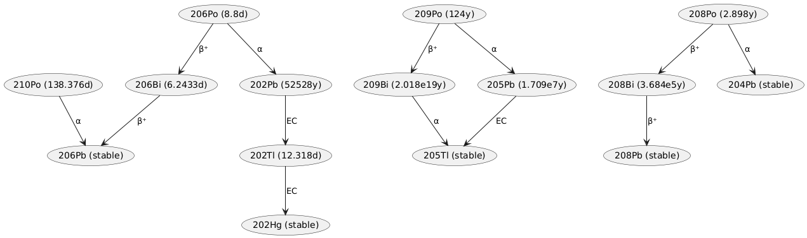

Before getting into nuclear safety one should be reminded that the Eternity of Everything is already full of societies where aliens coexist, and as such are already used to managing the danger that organisms evolved under vastly different chemical conditions pose to each other.
Polonium-210 has a number of beneficial characteristics:
1. it is exclusively an alpha emitter, which does not require much shielding
2. a relatively short half-life as far as far as nuclear fuels go, which significantly limits the length of time that lost samples and contaminated areas will remain dangerous
3. decay chain which does not include other unstable isotopes, making it even safer than Plutonium-238
This is unfortunately true only for specifically polonium-210 and not the other isotopes of polonium, as illustrated below.

The expected total Polonium-210 content in a fralinta is only about 5 grams at most, which would take 25.744 half-lives, corresponding to about 9.75 terran years or 307.8 megaseconds, to decay down to the median lethal dose to an unaugmented protohuman (1.18ng per kg of body mass). In practice since most of the polonium is contained deep within the body, such a long decay time is merely a conservative measure that provides a reasonable guarantee of safety.